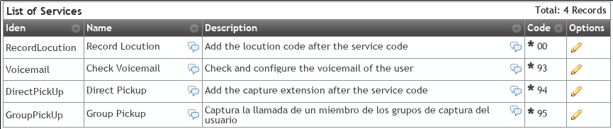
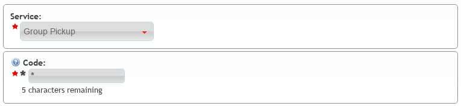

Additional services¶
There are special services that can be accessed by calling to some codes from the terminal.
Danger
Services defined in this section are not accessible during a conversation. They are activated by calling the codes, not using DTMF codes while talking.
Global Services codes¶
There are the folowing special services avaialble in the section Global configuration > Services:
- Direct pickup
- This service allows capturing a ringing call from another terminal by calling the code followed by the extension from the target user.
- Group pickup
- This service allows capturing a ringing call for any terminal whose user is part of one of the capturer pickup groups.
- Check voicemail
- This service allows checking the user’s voicemail using an interactive menu from which new voicemails can be listen, deleted, etc. This is an active alternative to receive voicemails via the email. Since 1.4, this service allows optional extension after the service code to check another users voicemails. Users can protect their voicemail using the internal menu options.
- Record locution
- This service allows any user to record their company’s locutions by dialing an special code. Voice instructions will be provided in the user’s language.
- Open Lock
- Calling this service code will set route lock status to ‘Opened’ (see Route locks).
- Close Lock
- Calling this service code will set route lock status to ‘Closed’ (see Route locks).
- Toggle Lock
- Calling this service code will change the current status of the lock (see Route locks).
As soon as new services are implemented into IvozProvider, they will be listed in this section.
Attention
This section lists the available services and the default codes when a new brand is created.
Hint
Changing the default code in this section will only affect new created brands.
Services and codes for Brands¶
The section Brand configuration > Services allows the brand operator to:
- Change the default service code for all the brand companies (assuming the company hasn’t already customized the code)
- Delete services so it won’t be available for the companies.
By default this list has all the services and codes from the global configuration:
Attention
This section lists the available services and the default codes when a new company is created.
Hint
Changing the default code in this section will only affect new created companies.
Services and codes for Companies¶
Each company can customize the default values assigned by the brand operator using the section Company configuration > Services and changing the codes listed there.
Company that wants to capture using ** instead of the default *95:
Hint
Services deleted by the company admin will not available to users.